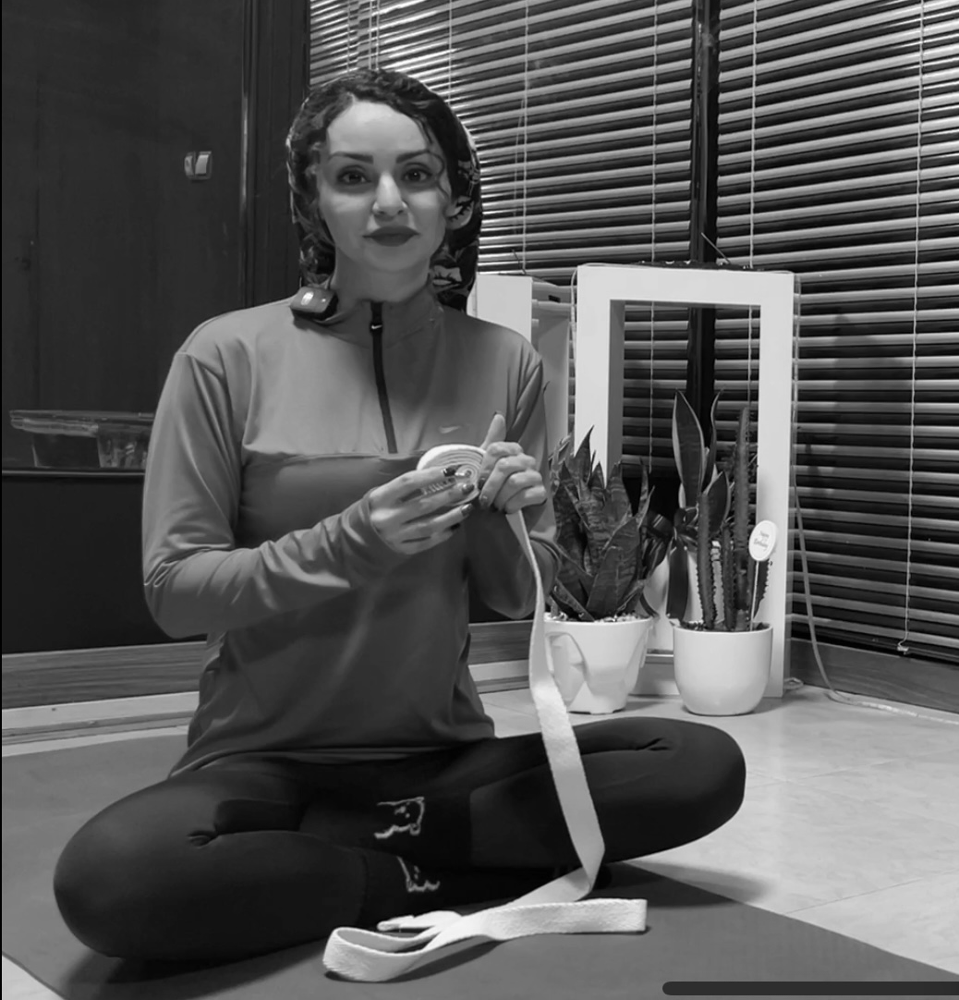

اریال یوگا در می ر لا
راهنمایی کلاسها و اساتید
آتنا نژاد تهرانی
- دارای مدرک مربیگری اریال و سویینگ از فدراسیون تمرینات معلق با ۵ سال فعالیت ورزشی در همین زمینه .
- دارای مدرک مربیگری آمادگی جسمانی از هیات همگانی کشور .
- ۳سال فعالیت ورزشی در زمینه ی فیتنس.
- آشنا با سبک هاتا یوگا ، آیینگر و آکرو .
- آشنا با ورزش رزمی کونگ فو.
- فعال در زمینه ی دره نوردی و کوهنوردی.
- گذراندن کارگاه های کار با کودک .

اریال یوگا چیست ؟
اریال یوگا اولین بار در آمریکا به عنوان ورزشی بین رشتهای به جهان معرفی شد در واقع اریال یوگا ترکیبی است از ورزشهای یوگا، پیلاتس و ژیمناستیک.
این ورزش را با پارچههایی که اصطلاحا به آن بانوج، هموک،پارچه یا بند اریال میگویند انجام میشود اریال یوگا به شما حس پرواز، آرامش و تعلیق را خواهد داد.
تفاوت یوگا با اریال یوگا
شاید این سوال برای شما پیش بیاید که تفاوت یوگا با اریال یوگا چیست اصلیترین تفاوت آنها در این است که یوگا ی زمین و بر روی متن انجام میگیرد و در آن تمرینهای مدیتیشن انعطاف و کشش صورت میگیرد اما در اریال یوگا حرکات به صورت آویزان معلق و یا معکوس صورت میگیرد که شما در پارچه یوگا حرکات و سیکلها را انجام میدهید.
اریال یوگا در شما حس آرامش و رضایت بیشتری ایجاد میکند و همچنین در اریال شما تقویت عضلات و انعطاف بیشتری را تجربه خواهید کرد.
اریال یوگا با چه ابزاری انجام میشود؟
در اریال یوگا از هموک یا پارچه، بندهای تنظیم کننده ارتفاع و کارابین استفاده میکنیم.
البته که تمامی سبکهای یوگا به مت یوگا نیز احتیاج دارند.
در استودیو یوگای می ر لا پارچههای گره خورده با بند تنظیم کننده به وسیله کارابینها به قلابهای محکم و استوار جوشکاری و پیچ شده در سقف متصل گردیده اند.
در صورتی که در محل مورد نظر امکان جوشکاری قلابها به سقف میسر نباشد برای اتصال کارابینها می بایست آنها را با ابزاری به نام X mount به سقف آویزان کرد، در طبیعت نیز میبایست پارچهها و کارابینها به طور ایمن و محکم به تنه درختان آویزان شوند از آنجا که اتصال پارچه و کارابینها به قلابهای سقفی امری تخصصی و حرفهای میباشد حتماً توصیه میکنیم این امر را به متخصصان بسپارید.
ایمنی در اریال یوگا
یکی از مهمترین مسائل در ورزش اریال یوگا ایمنی و امنیت ورزشکار است که این مهم همانطور که قبلاً اشاره شد به وسیله قلابهای جوشکاری و پیچ شده به سقفهای استودیو و همچنین وجود تشکهای ایمنی ضخیم در زیر محل مورد نظر تامین میگردد.
فراموش نکنیم که مربی شما هر لحظه و در تمام زمان کلاس ۶ دانگ حواسش به شما میباشد.
همچنین شما میبایست در طول زمان کلاس مطابق با نظر مربی عمل نموده و از انجام هرگونه حرکات اضافی و خودسرانه پرهیز نمایید.
فواید اریال یوگا چیست؟
۱- بهبود انعطاف پذیری، ثبات و تعادل
۲- کاهش ریسک خطر بیماری های قلبی
۳- بهبود سلامت روان
۴- کالری سوزی
۵- بهبود و رفع مشکلات و درد های مفصلی
۶- بهبود گردش خون
۷- کمک به هضم بهتر و بهبود گوارش
۸- کاهش و رفع فشارهای وارد بر ستون فقرات
۹- سم زدایی و کمک به بهبود عملکرد غدد لنفاوی
۱۰- افزایش تعادل
۱۱- جوان سازی بدن
۱۲- بهبود عملکرد مغز
۱۳- کاهش استرس و فشار روانی
۱۴- بهبود خواب
۱۵- افزایش تمرکز
۱۶- افزایش مهارت های انعطافی
۱۷- افزایش قدرت عضلات
۱۸- افزایش قدرت بدنی
 تهران، خیابان کریمخان زند، نجات الهی جنوبی، خیابان امانی، پلاک ۶، زنگ ۶، واحد ۷
تهران، خیابان کریمخان زند، نجات الهی جنوبی، خیابان امانی، پلاک ۶، زنگ ۶، واحد ۷